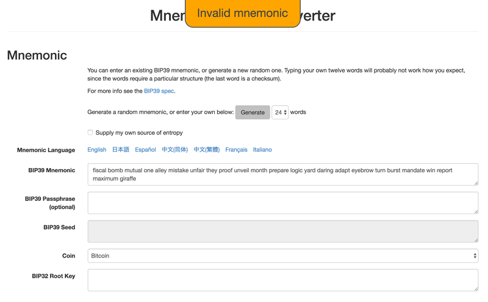

Оригинальная статья была написана в сентябре 2017 года.
Преамбула
Это длинный текст, который охватывает весь процесс восстановления парольной фразы. В процессе поиска решения я узнал много вещей, о которых стоит упомянуть, если описывать технические подробности из области криптографии. Учитывайте, что с моей стороны определенно были и ошибочные и правильные действия (что легко увидеть задним числом). Я использую термины «список слов», «парольная фраза» и «мнемоника» взаимозаменяемо, хотя иногда подразумеваю под данными фразами разные вещи, поэтому извините за путаницу.
История вопроса
Итак, мой товарищ пишет мне, что знакомый парень потерял монеты на 10 тысяч долларов после обновления своего устройства - кошелька Ledger Nano S. Это аппаратный USB-кошелек, который хранит несколько типов монет «в автономном режиме». Технически монеты никогда нигде не хранятся, потому что они существуют только в цепочках блоков, но пароли для доступа к ним - это именно то, что люди защищают в своих программных и аппаратных кошельках. Я не знаю точно деталей, при которых произошла потеря. Произошло что-то вроде такого: владельцу кошелька было предложено обновить устройство, и выбор опций по-умолчанию очистил существующий кошелек. Все монеты оказались потерянными, и восстановить их не удалось после нескольких часов усилий.
Меня очень сильно разозлило то, что Ledger не делает процесс обновления ПО абсолютно ясным. В последнее время я узнал намного нового о криптовалютах, поэтому, хотя я полагал, что дело безнадежное, я хотел помочь если смогу. Моей первой мыслью было оставить устройство полностью в покое, чтобы не вносить никаких изменений в него, чтобы случайно не удалить то, что необходимо восстановить. Аналогично мы поступаем с компьютером, что обезопасивает пользователя от потери данных, пока техподдержка не поможет разобраться в вопросе.
После небольшого разговора с пользователем Ledger я узнал, что он ранее записал мнемоническую фразу из 24 слов для своего кошелька. Парольные фразы автоматически генерируются устройством для пользователя. Эти парольные фразы (из 24 слов) сами по себе не являются паролями, но их можно преобразовать в реальные пароли в соответствии со стандартом BIP39. Здесь возникает пара сложностей:
Но у пользователя была записана вполне конкретная парольная фраза, так что даже если что-то было написано неправильно, оставалась надежда на восстановление. Я вспомнил, что уже где-то читал похожую историю, возможно, на Reddit, о том, что кто-то неправильно написал одно из 24 слов, а дружелюбный специалист техподдержки написал скрипт, чтобы выяснить, какое слово было ошибкой, и исправить ее. В любом случае, что-то в этом роде уже было в Интернете. Я искал эту историю но не мог найти. В любом случае, я погуглил информацию о восстановлении кошельков Ledger и нашел ссылку на их веб-сайт и страницу поддержки, которая облегчает проверку правильности этих самых 24 слов. На данный момент, потеря пароля была очевидна, но некоторая надежда на восстановление оставалась.
Я отправил пользователю ссылку на эту страницу, и он стал пытаться получить правильную парольную фразу. На следующий день ему все еще не повезло, и он прислали мне более 24 слов (?), чтобы я тоже попробовал восстановить пароль.
Найти правильный мнемонический пароль
Вот список слов парольной фразы (не оригинал, но будет работать в качестве примера):
fiscal bomb mutual one alley mistake unfair they proof unveil month prepare logic yard daring adapt eyebrow turn burst mandate win report maximum giraffe
Итак, обо всем по порядку, что говорит программа Mnemonic Code Converter / BIP39 Tool от Ian Coleman (и используется Ledger), когда вы вводите эту фразу-пароль? А вот что:

Ясно, что предоставленная фраза неверна. Я не знаю деталей, но мне известно, что последнее слово в последовательности слов стандарта BIP39 (12 слов, 24 слова или другие кратные 3) является контрольной суммой. Контрольная сумма говорит о том, что остальная часть предыдущей последовательности является действительной. Поэтому, если просто выбрать 24 случайных слова из 2048 слов спецификации BIP 39, то полученная парольная фраза, с большой вероятностью, будет недопустимой. К вашему сведению, везде и всюду настоятельно рекомендуется не создавать свою собственную парольную фразу, а сгенерировать ее правильным способом. По сути, фраза, которую вы пытаетесь создать вручную, никогда не будет такой энтропийной и случайной, как та, которая будет сгенерирована алгоритмически.
Полюбому, я сначала спросил пользователя, есть ли у него какие-либо идеи о словах, которые могут быть неправильными, например, неправильно записаны, трудны для чтения или записаны по строкам, а не по столбцам. В исходном списке слов слово «жесткий» (rigid) появляется дважды и в верхней части обеих колонок на фирменной карточке, предназначенной для записи восстанавливающей парольной фразы (карточка изображенна ниже).
BIP39 допускает повторяющиеся слова, поэтому двойное слово rigid не обязательно является проблемой. Но лучше попробовать поработать с ним, чем вообще ничего не сделать.
Скажем, мы можем попробовать заменить одно вхождение этого слова другими словами. Но это уже 2048 возможностей ... Это не то дело которое надо делать вручную. Тем более что это, вероятно, тупик. Однако, достаточно просто написать Ruby-сценарий для создания парольных фраз.
# an array of the 2048 word list
bip39_word_list = %w(
abandon
ability
able
about
above
absent
absorb
...
)
# array of our incorrect 24 word phrase
passphrase = %w(fiscal bomb mutual ... )
# generate test passphrases by replacing each word in the original passphrase with all 2048 words
passphrase.each_with_index do |current_word, index|
bip39_word_list.each do |test_word|
passphrase_copy = passphrase.clone
passphrase_copy[index] = test_word
end
end
Вместо того, чтобы просто заменить со словом rigid, я решил, что просто сделаю циклы для генерации всех 24 * 2048 возможных тестовых фраз. Всего 49 152 фразы. Этот сценарий тестирования является «лучшим случаем», где только 1 слово в парольной фразе является неправильным. И это только первый шаг. Если ошибка в более чем одном слове, или если порядок слов неправильный, то у нас будет гораздо большая проблема.
Как мы узнали ранее, последнее слово в парольных фразах является контрольной суммой, и, поэтому большинство из 49 512 вообще не являются действительными. Как мы можем проверить это автоматически? Я изучил JavaScript-код проверки фраз по стандарту Bip39, чтобы понять как им пользоваться, но затем нашел Ruby-гем BipMnemonic. Давайте расширим скрипт, чтобы помимо генерации фраз, он проверял их правильность.
valid_count = 0
# generate and validate test passphrases by replacing each word in the original passphrase with all 2048 words
passphrase.each_with_index do |current_word, index|
bip39_word_list.each do |test_word|
passphrase_copy = passphrase.clone
passphrase_copy[index] = test_word
passphrase_copy_string = passphrase_copy.join(' ')
begin
# throws an error if the mnemonic is invalid
BipMnemonic.to_entropy(mnemonic: passphrase_copy_string)
valid_count+=1
rescue SecurityError => e
end
end
end
Так, получилось всего 199 действительных комбинаций! Что интересно, это 0,4% от исходного количества. Интересно, такой же процент угадывания был бы, если бы я случайно выбрал 24 слова? Тогда было бы слишком легко проверять пароли... что я гоню.
Продолжим. Скажем, у нас есть правильный пароль. Тогда мы сможем сгенерировать закрытый ключ и получить доступ к кошельку. Имеется ли приложение (программный кошелек), в которое я могу легко добавить тестовые фразы? Это сделало бы всю работу гораздо проще. Простое и легкое приложение, в котором возможна массовая проверка, это было бы здорово. Не помню, чем завершился поиск такого приложения. Возможно, и были такие приложения, но я видел, что они поддерживали только Биткойн, а у меня сложилось впечатление, что в кошельке пользователя были другие альтернативные монеты. И определенно, я не хотел вручную пробовать 199 фраз. Я не понимал, как в кошельке могло храниться более одного типа монет. Ведь насколько я понимаю, кошелек - это просто соответствующий открытый и закрытый ключ и адрес блокчейна. Похоже, что для Ledger это не так, но мы разберемся с этим позднее.
Неважно как, но если мы можем генерировать адреса, то по крайней мере, мы можем проверить транзакции в блокчейне. Если мы нашли транзакцию, то это означает, что мнемоническая фраза, из которой она была получена, была правильной. Все транзакции являются полностью открытыми, и различные веб-сайты облегчают проверку, например, blockchain.info. К счастью, я также нашел пост на Reddit, в котором кто-то опубликовал свою сломанную парольную фразу для биткойн-кошелька, а другой читатель выяснил проблему и опубликовал некоторую информацию, которая помогла восстановить пароль (да, это не та история, на которую я ссылался в начале этого поста). Данный пост можно использовать в качестве справки, потому что там опубликован настоящий кошелек с транзакциями, которые можно проверить.
Дописать...